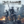

 NieR:Automata BECOME AS GODS Edition
Details
 |
|
| Playtime | Not Played |
| Last Activity | Never |
| Added | 10/29/2021 1:32:17 |
| Modified | Never |
| Completion Status | Not Played |
| Library | Xbox |
| Source | Xbox Game Pass |
| Platform | PC (Windows) |
| Release Date | 3/18/2021 |
| Community Score | |
| Critic Score | |
| User Score | |
| Genre | |
| Developer | PlatinumGames Inc. |
| Publisher | Square Enix |
| Feature | |
| Links | |
| Tag | Game Pass |
Description
Invaders from another world attack without warning - unleashing the machine lifeforms. To break the deadlock, a new breed of android infantry is sent into the fray: the YoRHa squad. Highly-acclaimed and award winning NieR:Automata™ is a fresh take on the action role-playing game (RPG) genre that gracefully blends mesmerizing action with a captivating story.
The NieR:Automata™ BECOME AS GODS Edition includes the action-packed 3C3C1D119440927 downloadable content* which features “Revealing Outfit” costume for 2B, “Young Man’s Outfit” costume for 9S and “Destroyer Outfit” costume for A2. After completing new sub-quests in this downloadable content, you can enjoy playing the game while wearing these costumes from NieR Replicant. Sub-quests take the form of three different battle challenges at three different colosseums. Special music video: NieR:Automata meets amazarashi “Deserving of Life,” from collaboration with rock band amazarashi, is also included as part of the scenario.
The NieR:Automata™ BECOME AS GODS Edition also includes the following content:
• Machine Mask Accessory
• Grimoire Weiss Pod
• Cardboard Pod Skin
• Retro Grey Pod Skin
• Retro Red Pod Skin
*To enjoy this content you will need to have progressed a certain way into the main story of the game. There are also some scenes during the progression of the main game scenario in which this content cannot be accessed.
NieR:Automata™ BECOME AS GODS Edition supports 4K resolution (2160P) and HDR on Xbox One X.
Story:
NieR:Automata tells the story of androids 2B, 9S and A2 and their battle to reclaim the machine-driven dystopia overrun by powerful machines.
Humanity has been driven from the Earth by mechanical beings from another world. In a final effort to take back the planet, the human resistance sends a force of android soldiers to destroy the invaders. Now, a war between machines and androids rages on... A war that could soon unveil a long-forgotten truth of the world.
Key Features:
Action-Packed Battles – Players will switch between using melee and ranged attacks in battle against hordes of enemies and challenging bosses across a variety of open field maps. The tight controls and incredibly fluid combat are simple to learn for newcomers while offering plenty of depth for more experienced action gamers. Players can perform high-speed battle actions—combining light and heavy attacks—and switch through an arsenal of weaponry while evading enemies with speed and style.
Beautifully Desolate Open-World – The game seamlessly joins together hauntingly beautiful vistas and locations with no area loading. The environments are rendered in 60fps and contain a wealth of sub-events in addition to the main storyline.
Masterfully Crafted Story and Characters – NieR:Automata tells the story of androids 2B, 9S and A2 and their ferocious battle to reclaim a machine-driven dystopia overrun by powerful weapons known as machine lifeforms.
Elements of an RPG – Players will obtain a variety of weapon types, level up in battle, learn new combat skills, and customize a loadout that caters to their playstyle.
Utilize the Pod Support System to Assist In and Outside of Battle – Pods can attack the enemy in both manual and lock-on modes. They can also assist outside of battle, such as allowing the player to glide through the air. Pods can be enhanced throughout the game, with upgrades including new attack methods and variations.
“Auto Mode” Available for Beginners – Novice players can elect “Auto Mode” for easy attacks and evasions.